Iglesia de San Pedro
Iglesia parroquial de San Pedro Apóstol, en la Plaza Mayor.
En esta página (8 apartados · 22 min de lectura)
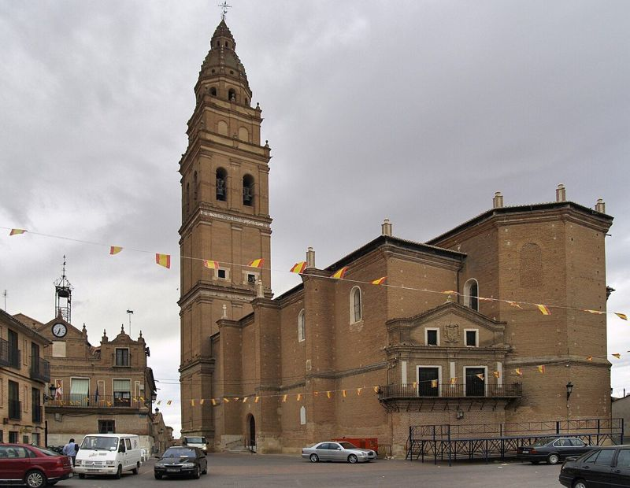
San Pedro preside la Plaza Mayor, junto al Ayuntamiento. Con Santa María forma la pareja de torres de ladrillo que se ve desde toda la llanura y que ha valido a Alaejos el sobrenombre de «el pueblo de las dos giraldas». El decreto que declaró Conjunto Histórico el casco urbano, en 1997, describe la villa como «presidida por las esbeltas torres de las iglesias de Santa María y San Pedro».
Historia de la obra
La iglesia aparece citada ya a comienzos del siglo XVI. El edificio que vemos hoy es, según el decreto de su declaración como monumento, «obra del tercer cuarto del siglo XVI», y en ella «confluyen reminiscencias góticas, junto a elementos estructurales y decorativos, renacentistas y mudéjares». Se levantó sobre un templo anterior, de la época de la repoblación, que sufrió el cerco comunero de 1520 contado en Historia del pueblo. Según los Apuntes sobre el señorío de Alaejos (programa de fiestas de 2017), los comuneros incendiaron y derribaron entonces la torre de la iglesia vieja. La nueva se empezó casi medio siglo después, y en las fachadas todavía se ven los «costurones» donde se unieron la obra antigua y la nueva. Sigue abierta al culto.
En 1600 visitó la iglesia el rey Felipe III, y una lápida en el templo lo recuerda.
El obispo Vadillo, su gran benefactor
San Pedro debe buena parte de su ajuar a un hijo del pueblo, el doctor Juan Fernández Vadillo, obispo de Cuenca a finales del siglo XVI. Según los artículos de Adolfo M. Araújo en los programas de 2007 y 2013, pagó de su bolsillo el retablo mayor, en cuya base están sus escudos, y la sillería de nogal del coro con su reja. Donó además ornamentos y orfebrería y fundó capellanías en la parroquia. El obispo no llegó a ver el retablo terminado. Su retrato al óleo, de cuerpo entero, cuelga en la sacristía.
El edificio
El exterior es de ladrillo y de gran sobriedad. Tiene tres naves de tres tramos, cabecera poligonal y la sacristía en el primer tramo de la nave del Evangelio. Las naves se separan con arcos de medio punto sobre pilares cuadrados y se cubren con bóvedas de crucería estrellada de yesería, con terceletes y claves de motivos vegetales: es la pervivencia del repertorio gótico en un edificio ya renacentista. La moción del Ayuntamiento que pidió en 1981 su declaración como monumento le da 50 metros de largo por 22,5 de ancho, y la describe como construida con ladrillo y mampuesto en el siglo XVI, con reformas exteriores del XVIII (programa de 1981).
Hacia la Plaza Mayor, junto a la cabecera, se abre el elemento más singular del exterior: un balcón de forja castellana que, según el decreto de declaración, se hizo para los actos públicos. Desde él asistían los clérigos a lo que ocurría en la plaza, y todavía hoy se usa en actos oficiales. Sobre el hastial, con dos ventanales, está el escudo de San Pedro.

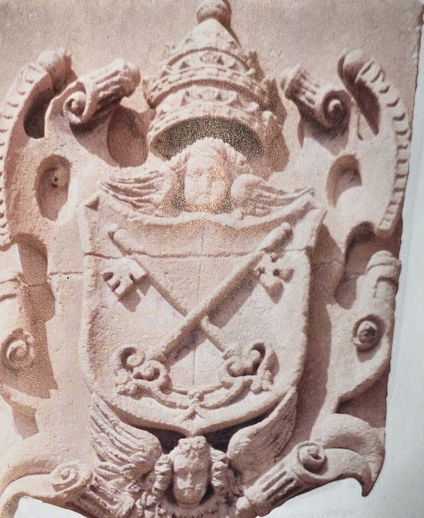
Francisco José Rodríguez Carracedo fechaba el balcón en el siglo XVIII y lo describía como un balcón corrido entre la cabecera y el testero de la nave de la Epístola, rematado en frontón y todo de ladrillo: «ejemplo de la belleza formal que se puede lograr con este material». En el frontón está el escudo de la parroquia, con la tiara y las llaves de san Pedro (Rodríguez Carracedo, 1991, pág. 26).
A los pies se encuentran el baptisterio, bajo la tribuna del órgano, y el coro bajo, en el centro de la nave.
En el suelo del crucero, ante el presbiterio, hay una losa de piedra blanca con un escudo y esta inscripción: «Aquí yace doña Josefa Méndez Vadillo, quien dotó y fundó esta sepultura para sí y sus sucesores. Falleció año de 1804». Felipe de Perlines (programa de 2011) comprobó en los libros parroquiales que doña Josefa era feligresa de Santa María y pidió ser enterrada allí. Por eso duda de que haya alguien bajo la losa: cree que se colocó en San Pedro cuando ya no se permitía enterrar en las iglesias.

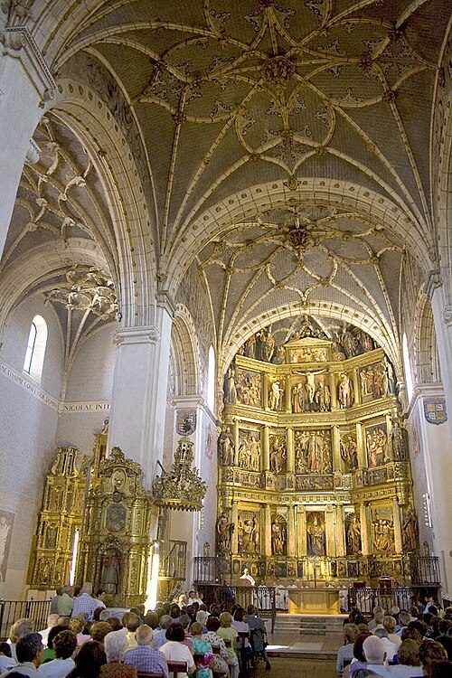


La torre
Es la más alta de las dos de Alaejos y una de las más altas de la provincia. Es de ladrillo, decorada con frisos esgrafiados, pilastras toscanas y bandas de azulejos, y termina en un cuerpo ochavado con cúpula y linterna. Por dentro, una escalera de caracol sube hasta el campanario. Antes de la restauración actual subían a él varios miles de visitantes al año.
El decreto de declaración la describe como «obra barroca de finales del XVII».
En 1991 Francisco José Rodríguez Carracedo la tenía por «la más gallarda de toda la zona occidental de Valladolid». Contaba cuatro cuerpos con pilastras planas toscanas y entablamentos de formas variadas, y sobre ellos un cuerpo cuadrado más estrecho y otro ochavado, con cúpula apuntada y linterna de cubierta cónica. En los frisos del segundo y el tercer cuerpo describía esgrafiados de triglifos, leones, águilas explayadas de dos cabezas y el escudo de San Pedro, y en las dos cúpulas, bolas de cerámica vidriada azul sobre pedestales. Los esgrafiados y la cerámica de colores le dan, escribía, «un aire oriental, a modo de minarete», aunque es una obra barroca del siglo XVII (pág. 26).

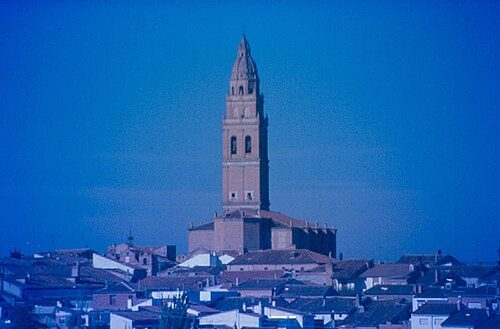
_(1).jpg){kind=link}

_(4).jpg){kind=link}
Lo que guarda
El retablo mayor
Preside la cabecera un gran retablo de estilo romanista y clasicista, inspirado en el modelo escurialense del de la colegiata de Villagarcía de Campos. Tiene banco, tres pisos con los tres órdenes clásicos —dórico, jónico y corintio—, tres calles y ático con frontón triangular. Debió de terminarse hacia 1603.

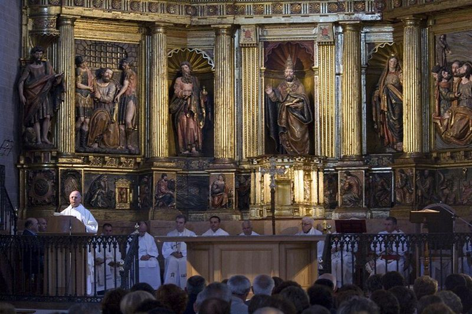


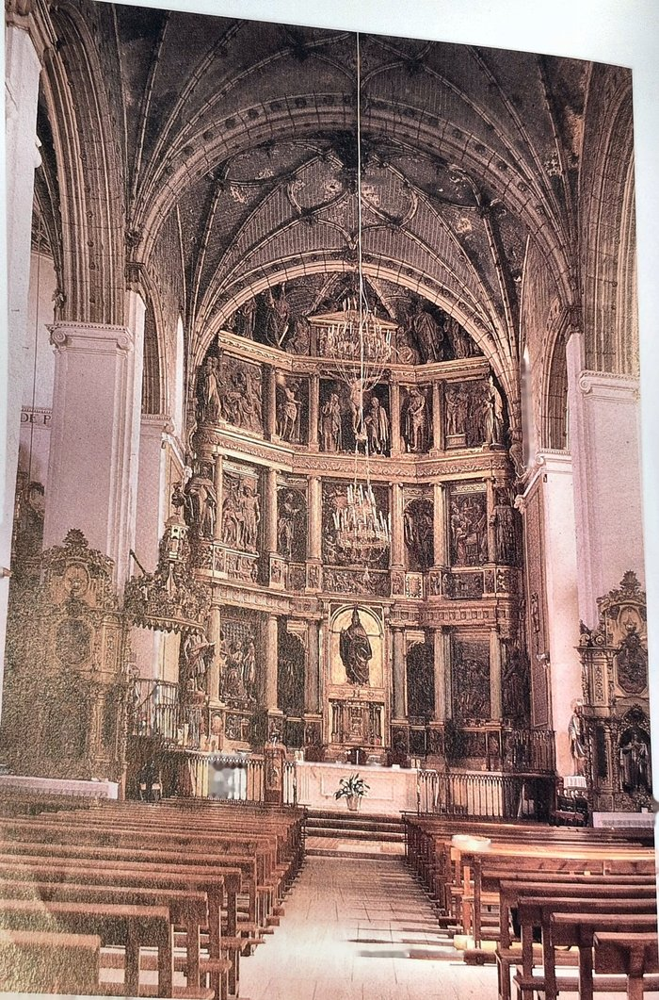
En la hornacina central está san Pedro con la tiara pontificia, acompañado de relieves de su prisión y de Cristo caminando sobre las aguas. En los pisos se reparten san Juan Bautista, san Pablo, santa Catalina, san Andrés, santo Domingo, san Juan Evangelista y san Francisco, y en el banco santa Clara, santa Apolonia, Jonás, los Padres de la Iglesia y los evangelistas.
Otros retablos e imágenes
En las naves hay un retablo de la Inmaculada del siglo XVI y otros dos del XVIII, del Niño Jesús y de san Nicolás. Hay además un retablo plateresco que, según la tradición, procede de la iglesia del despoblado de Valdefuentes.
Francisco José Rodríguez Carracedo describía en 1991 otros dos retablos de la nave de la Epístola. Uno, grande y barroco, decorado con cabezas de serafines, «todo dentro del estilo de Pedro de Sierra», que fue «lastimosamente repintado en 1911». El otro, barroco, del siglo XVIII y dorado, tiene grandes columnas salomónicas, entre las que se alza un crucifijo «muy enigmático», cuya cabeza es una simple mascarilla cubierta por una peluca (pág. 27).
A los pies se conservan una sillería de nogal con veintinueve asientos y facistol, cerrada por una reja, y un órgano barroco del XVIII, que en 1981 se había restaurado poco antes. La sillería y la reja serían donación del obispo Vadillo. El inventario de la moción de 1981 cita además un Cristo y un Cristo yacente del siglo XVI y varios retablos barrocos y uno neoclásico.

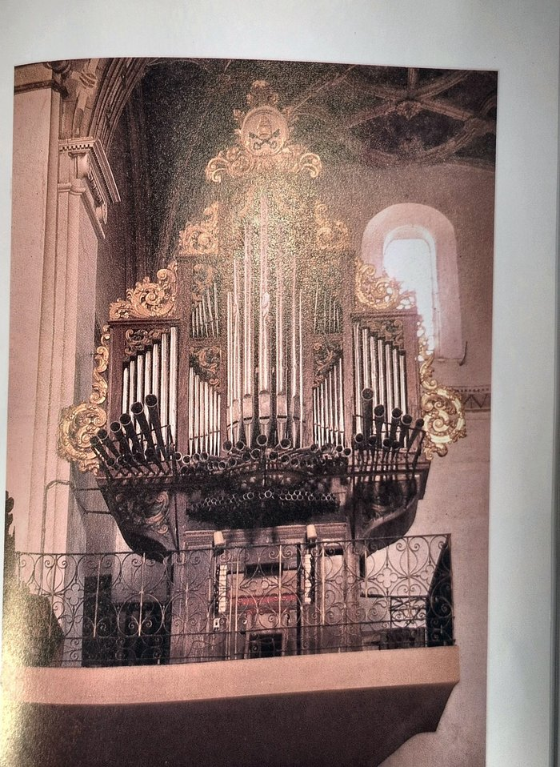
El siglo XVIII, la hora de San Pedro
Durante siglos Santa María fue la parroquia más rica: le correspondían tres de cada cinco partes de los diezmos. José Ojeda Nieto (programa de 2006) explica que desde finales del XVII la población y las familias pudientes crecieron en la feligresía de San Pedro. Con ellas llegaron limosnas, mandas y obras pías, y la iglesia se llenó de nuevos adornos. Ojeda documenta tres encargos:
- El dorado del retablo del Cristo de la Caridad, contratado el 17 de junio de 1746 con Francisco Regas, maestro dorador vecino de Alaejos. Costó 7.000 reales, de los que 350 fanegas de trigo se pagaron en especie. El retablo guarda también una imagen de la Virgen de las Angustias y dos santos.
- Un nuevo retablo de Nuestra Señora de la Esclavitud, de mediados del siglo, encargado a Juan Rico, escultor y arquitecto de Toro, por 5.500 reales. Se pagó con un censo, una aportación de los beneficiados, la venta del retablo viejo y las limosnas de los feligreses.
- La cajonería de nogal de la sacristía, obra de Pedro de Aguilar y Felipe Rico, también de Toro, por 4.000 reales.
Orfebrería
La sacristía de San Pedro guardaba, según la moción de 1981, un cáliz gótico de plata dorada del siglo XV, una naveta del XVI, una cruz parroquial de plata del XVI, una cruz rococó del XVIII y un Cristo de marfil del XVIII. La tradición atribuía el cáliz gótico a la generosidad del obispo Vadillo, aunque Araújo pensó después que había llegado a la iglesia desde el castillo. Hoy las piezas más valiosas de las dos parroquias se guardan en el museo interparroquial de Santa María. En 1991 Francisco José Rodríguez Carracedo citaba un Cristo filipino de marfil del XVIII, la cruz parroquial de plata sobredorada del XVI y el cáliz de plata dorada de la segunda mitad del XV, y decía que ya se exponían, por seguridad, en el Museo Interparroquial de Santa María (pág. 27).
Las grisallas y el retablo escondido
La restauración que terminó en 2010 sacó a la luz, bajo capas de cal, un amplio conjunto de pintura mural en blanco y gris, la grisalla. Cubre las bóvedas y finge sillares de piedra en los muros, y la Junta de Castilla y León lo considera de alto valor por su calidad y su extensión. Sobre la cornisa de la nave central se reconocen escenas figuradas.
José M. Baraja contó en el programa de 2022 («Los secretos de San Pedro»), con imágenes de la Dirección General de Patrimonio Cultural, lo que apareció además durante aquellas obras:
- Un retablo pintado detrás del retablo mayor, directamente sobre el muro de la cabecera. En la predela tiene un crucifijo entre ángeles, con santa Catalina y la Magdalena. En el primer cuerpo, san Pedro en cátedra entre san Juan Bautista y san Francisco. En lo alto, la Transfiguración con los cuatro evangelistas. No se sabe quién lo pintó ni cuándo. Baraja cree que es anterior a 1603: o bien pertenecía al templo anterior, o bien cubrió la cabecera mientras se hacía el retablo de madera. Sigue oculto detrás de él y en estado razonablemente bueno.
- Un vía crucis de catorce estaciones, pintado en el zócalo de las naves laterales, con sus leyendas.
- Filacterias, es decir, inscripciones latinas sobre Cristo, la Virgen y los santos, que recorren la cabecera y las naves.

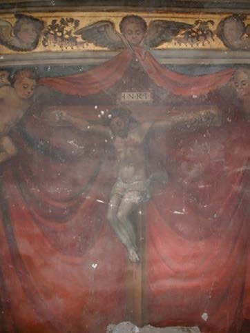

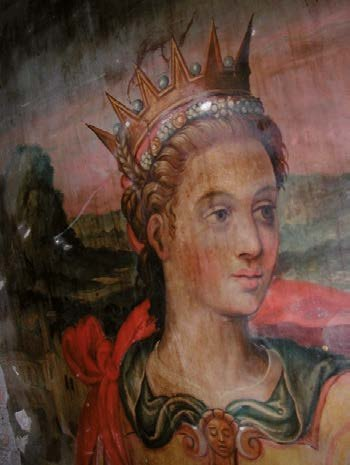

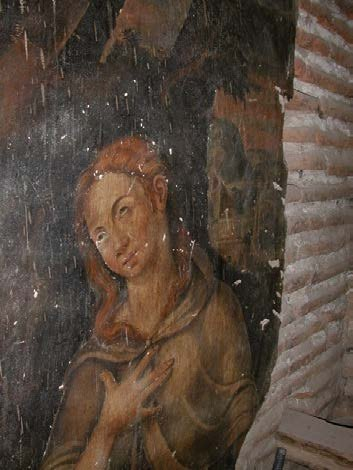

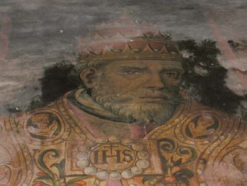

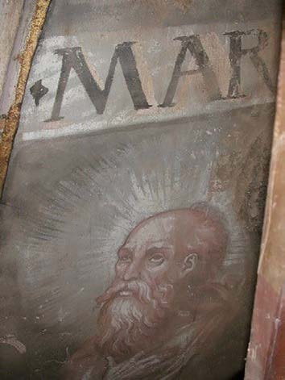

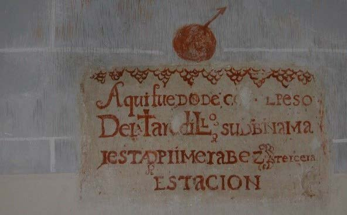
Las fotografías del retablo oculto se tomaron por los huecos que quedan detrás del retablo mayor, por lo que algunas son parciales.
Protección
Es bien de interés cultural, con categoría de monumento, por el Decreto 216/1997, de 30 de octubre, de la Junta de Castilla y León (BOE de 28 de noviembre de 1997). El expediente se había incoado el 11 de noviembre de 1981. El entorno protegido abarca las manzanas que rodean la Plaza Mayor.
Restauraciones
El interior (2010)
La Junta de Castilla y León, con fondos europeos FEDER, restauró las pinturas murales y los bienes muebles. El proyecto fue de Natalia Martínez de Pisón, que dirigió la obra con Carlos Tejedor, y la ejecutaron los Talleres de Arte Granda. Se inauguró en agosto de 2010 y terminó oficialmente el 30 de diciembre de ese año. Mientras duró, se abrieron los andamios al público en jornadas de puertas abiertas.
La esquina de la torre (2017-2019)
A finales de mayo de 2017 se desprendieron ladrillos de la esquina suroeste de la imposta que remata el primer cuerpo de la torre, a unos diez metros de altura, y con ellos la parte baja de las pilastras del segundo cuerpo. A mediados de junio cayeron más: se acordonó la calle, se cortó el tráfico y se colocó una red. El informe técnico encargado por la parroquia, presentado a la Comisión Territorial de Patrimonio Cultural en febrero de 2018, concluyó que la torre no corría peligro a corto plazo, aunque recomendaba vigilar la esquina suroeste. A finales de marzo de 2018 cayó desde lo alto una bola ornamental de unos treinta centímetros, sin causar daños personales.
La reparación empezó el 18 de junio de 2018, con Construcciones AMC. Al desmontar el chapado de la esquina apareció la fábrica interior muy agrietada. Los arquitectos no descartaron el efecto del hielo en las fisuras, pero concluyeron que la esquina estaba agotada por compresión: su capacidad resistente estaba afectada. La obra se paró, el andamio se retiró para las fiestas y en septiembre se redactó un nuevo proyecto. Los trabajos se reanudaron en marzo de 2019 y terminaron el 15 de julio: la esquina se cosió por dentro con barras de acero inoxidable recibidas con resina, se ató con trece tirantes del mismo acero y se reconstruyeron la pilastra y la imposta con ladrillo y mortero de cal, protegidas con un vierteaguas de zinc. En las grietas se colocaron testigos; la lectura de abril de 2021 no mostró movimiento significativo.
La restauración de la torre (2026)
En mayo de 2026 se montó el andamio de la obra que tiene ahora la torre. Su base es el «Proyecto básico y de ejecución de consolidación estructural y de elementos constructivos deteriorados», de junio de 2024, que la parroquia de San Pedro encargó a los mismos arquitectos de la obra de 2019, Marcelino Hurtado Acebes y Marina Donis García (HD Arquitectos). Hurtado había dirigido también la restauración de la cubierta de la iglesia (2003-2004) y la del exterior (2006-2007).
No es una restauración completa. Los arquitectos escriben que sería conveniente acometer todas las obras que pide el monumento, y que las han estudiado y presupuestado, pero que por razones de presupuesto y de urgencia la propiedad, de acuerdo con el Servicio de Conservación y Restauración de la Junta y con el Ayuntamiento, les pidió un proyecto limitado a lo «estrictamente necesario»: consolidar lo que haga falta y evitar que caigan a la calle piezas de la torre.
Lo que prevé:
- Un andamio en toda la altura de la torre, con lonas y un elevador para subir material y bajar escombros.
- Retirar los elementos sueltos y picar el revoco de los frisos de los antepechos.
- Sanear y reponer, con ladrillos iguales a los existentes y mortero de cal, las piezas de las basas y capiteles de las pilastras, cornisas, arquitrabes y antepechos, que son las que más riesgo tienen de caer, y reparar las grietas de la fábrica, sobre todo en el primer cuerpo.
- Revestir con mortero de cal las pendientes, los gajos de la cúpula y el pináculo, enfoscar los frisos y pintarlos a la cal.
- Poner vierteaguas, albardillas y baberos de zinc para que el agua no vuelva a entrar en la fábrica.
- Desmontar, limpiar y volver a asentar las bolas de cerámica vidriada azul del tambor, la cúpula y el pináculo, y asegurar los bolardos de granito de los cuerpos quinto y sexto.
- Restaurar la cruz de remate y colocar un pararrayos.
La estructura no se refuerza esta vez. Como los testigos de 2019 no se han movido, el proyecto solo añade otros en las fachadas oeste y sur y recomienda seguirlos durante dos años; si se movieran, habría que plantear inyecciones y atirantados. Tampoco se toca el basamento de piedra, que está deteriorado pero, según los arquitectos, no supone riesgo para los viandantes.
El proyecto ya contaba con las aves. Prevé desmontar el nido de cigüeña del antepecho del quinto cuerpo, en la cara norte, guardar parte de él, poner una plataforma en el mismo sitio y volver a colocar el nido encima, y dispone que la obra no coincida con la cría de las cigüeñas, de febrero a julio. Según el alcalde, la obra se detuvo además varias semanas porque anidaban en la torre cernícalos primilla, una especie protegida que en Alaejos solo cría en las dos torres parroquiales. Se esperaba acabar en octubre.
El presupuesto del proyecto es de 255.798,58 euros de ejecución material, de los que casi la mitad, 119.665,81, son el andamio y los demás medios auxiliares. Con gastos generales, beneficio industrial e IVA, el presupuesto base de licitación sube a 377.609,85 euros. El plazo previsto es de tres meses, en una sola fase.
La Comisión Territorial de Patrimonio Cultural de Valladolid lo autorizó el 13 de noviembre de 2024, con dos condiciones: recuperar y reintegrar todas las bolas posibles, también las que se cayeron y se guardan, y que el pararrayos se vea lo menos posible. Pidió además que se detallara, pieza por pieza y con fotografías, cómo se va a tratar cada bola y cada bolardo. Como la obra no empezó en el plazo de un año, la autorización caducó. El Arzobispado pidió renovarla en enero de 2026 y la Comisión volvió a autorizarla el 11 de marzo, con las mismas condiciones y dos más: que la restauración la haga un técnico titulado y que, por el tiempo pasado, antes de empezar se haga un levantamiento fotogramétrico completo de la torre. Si de él resultara más obra, habría que presentar una documentación refundida y volver a pedir autorización.
La obra se paga con una subvención directa de la Consejería de Cultura, Turismo y Deporte al Arzobispado de Valladolid, aprobada por el Consejo de Gobierno de la Junta el 18 de diciembre de 2025 dentro de un paquete de ayudas al patrimonio de las diócesis. Para la «consolidación de la torre de la iglesia de San Pedro (Alaejos)» se reservaron 792.920 euros en dos anualidades: 368.803 y 424.117 euros. El cartel de la Junta colgado en el andamio, fechado el 30 de junio de 2026, habla de «504.741,55 euros de ayuda». La empresa que ejecuta la obra, según el cartel de obra, es Construcciones AMC, la misma de la reparación de 2018-2019.
Procedencia: el proyecto y las autorizaciones los facilitó la Consejería de Cultura, Turismo y Deporte de la Junta de Castilla y León, por Orden de 14 de noviembre de 2026 (expediente de acceso a la información pública 4256.B/2026), a petición de un vecino. Información actualizada a esa fecha. Los acuerdos de la Comisión se publican con los datos personales suprimidos. El proyecto, que es obra de sus autores, no se reproduce: aquí se resume. El reparto de la subvención consta en el anexo del acuerdo del Consejo de Gobierno de 18 de diciembre de 2025.
Vida de la parroquia
La Semana Santa de Alaejos, que organizan las nueve cofradías penitenciales reunidas en la Junta Local, reparte sus actos entre las dos iglesias. El Domingo de Ramos la procesión de la Borriquilla sale de Santa María y termina en San Pedro, donde se celebra la misa. El Domingo de Resurrección la procesión del Encuentro tiene lugar en la Plaza Mayor, a los pies de la iglesia.
En San Pedro tiene su retablo el Santísimo Cristo de la Caridad, cuya hermandad saca la imagen en procesión el martes de Carnaval, después de un triduo.
Hasta 1885 cada vecino podía elegir a cuál de las dos parroquias pertenecer, viviera donde viviera. Ese año el obispado trazó la línea que dividió el pueblo en dos feligresías. Hoy hay una sola parroquia, la de Santa María y San Pedro, aunque algunas celebraciones se siguen haciendo en la iglesia de cada antigua parroquia. Lo cuenta la página de Santa María.
Las campanas
Según la recopilación de los últimos campaneros publicada en el programa de 2025 («Campanas de Alaejos y sus toques»), la torre de San Pedro tiene la Gorda, la del Reloj, la Nueva, la Asistencia, el esquilón del Cristo y unos esquilones pequeños, de los que uno no suena. Tiene además la campanilla del Viático, en un ventanal del tercer cuerpo, que se tañe desde dentro de la iglesia.
La del Reloj es la mejor conocida. Adolfo M. Araújo leyó en ella que se fundió en octubre de 1898, siendo alcalde Vitorino Hernández y párroco Tomás Caballero, y que lleva en relieve dos corazones entrelazados, quizá los Sagrados Corazones (programa de 1990). Cuentan que suena tan dulce porque, al fundirla, los presentes echaron monedas de plata a la colada.
Casi todos los toques eran comunes a las dos iglesias, pero algunos eran solo de San Pedro: «a toro escapado» en las fiestas, «a espigar» y «a asustar al fraile» en Carnaval. La víspera de San Pedro se tocaba a pino al anochecer con la del Reloj y la Gorda. A los difuntos de la hermandad del Cristo de la Caridad se les tocaba a muerto con la Gorda y la del Reloj y después con el esquilón del Cristo. Los últimos campaneros fueron Mauro, Tinín, Mariano Rubio padre, Tito, Mariano Rubio, Agustín Rapado y Carlos Rubio.
Para seguir leyendo
- Francisco José Rodríguez Carracedo, «El arte religioso en la villa de Alaejos», en José Ojeda Nieto, Alaejos, apuntes histórico-artísticos (Valladolid, Diputación, 1991), págs. 23-28. Se cita con autorización de los autores; las fotografías de 1991 proceden del mismo libro.
- En la biblioteca de los programas de fiestas: «La iglesia de San Pedro de Alaejos» (1981), «Los retablos del Santísimo Cristo de la Caridad y de Nuestra Señora de la Esclavitud» (2006), «Los secretos de San Pedro» (2022) y «Campanas de Alaejos y sus toques» (2025).
- Decreto 216/1997 de declaración como bien de interés cultural: texto en el BOE.
- Ficha de la restauración de 2010 en la web de Patrimonio Cultural de la Junta de Castilla y León.
- Estudio del retablo mayor en el blog Arte en Valladolid.
- Fotografías y visita virtual en Arte y Patrimonio, y fotografías de libre uso en Wikimedia Commons.
- Sobre la obra de la torre en 2026: Tres foramontanos en Valladolid, que recoge la crónica de El Norte de Castilla.
- Autorizaciones de la Comisión Territorial de Patrimonio Cultural para la obra de la torre: 13 de noviembre de 2024 y 11 de marzo de 2026 (PDF).
Cómo citar esta página
Amigos de Alaejos, «Iglesia de San Pedro», https://www.amigosdealaejos.org/patrimonio/iglesia-de-san-pedro/ (revisión del 21/11/2026).